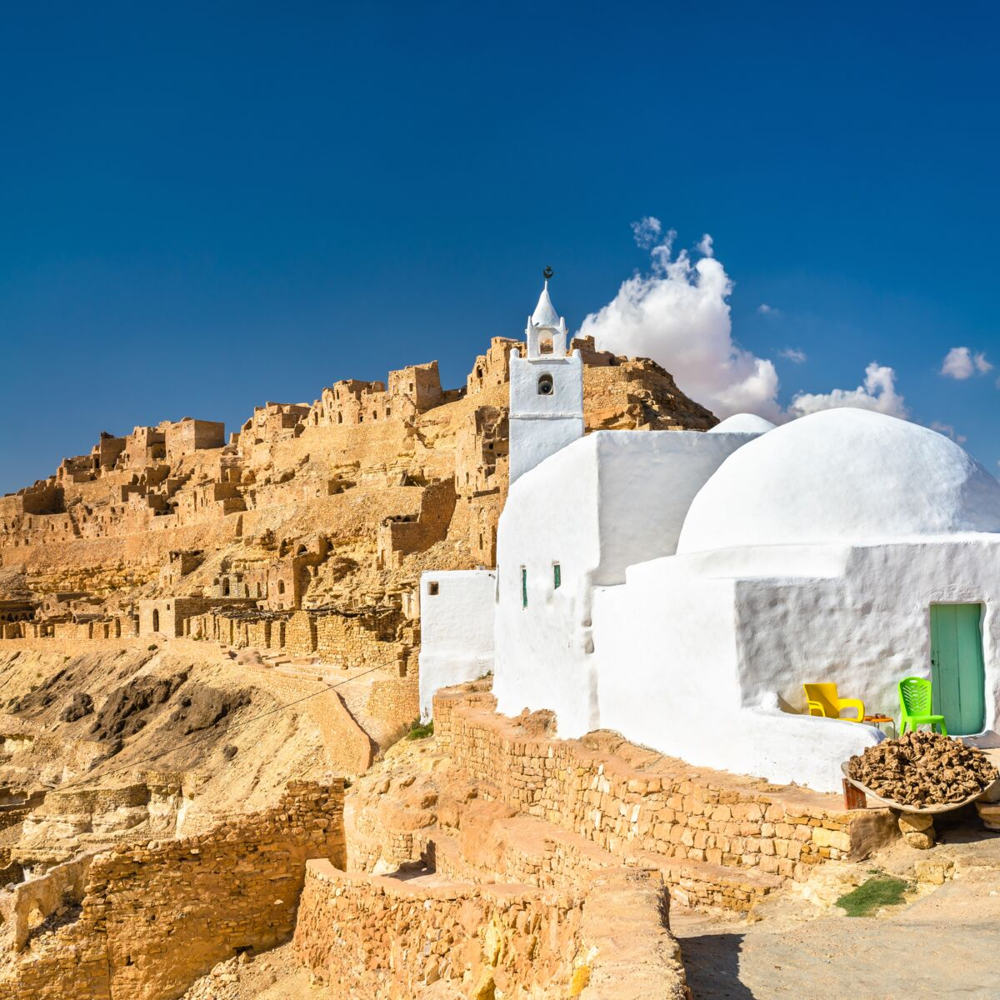
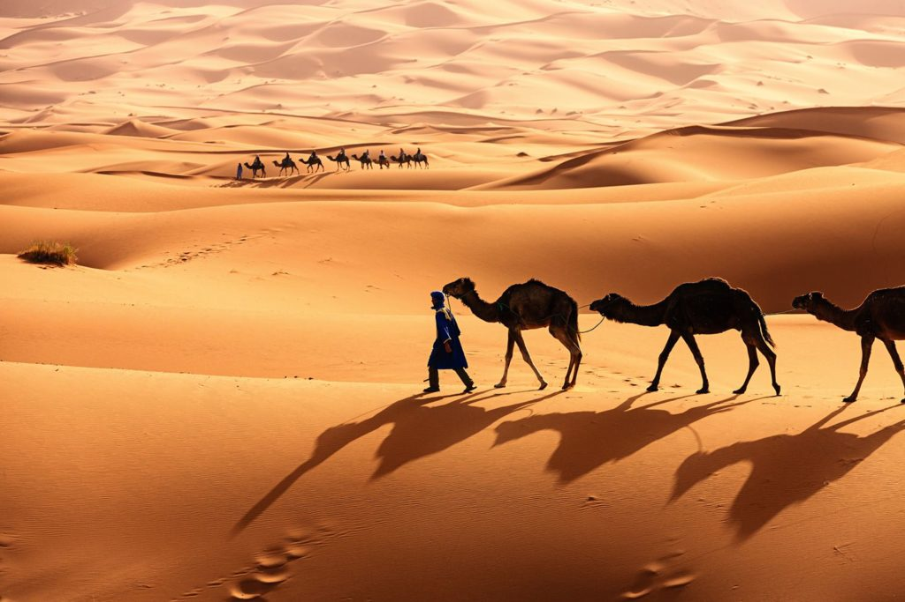
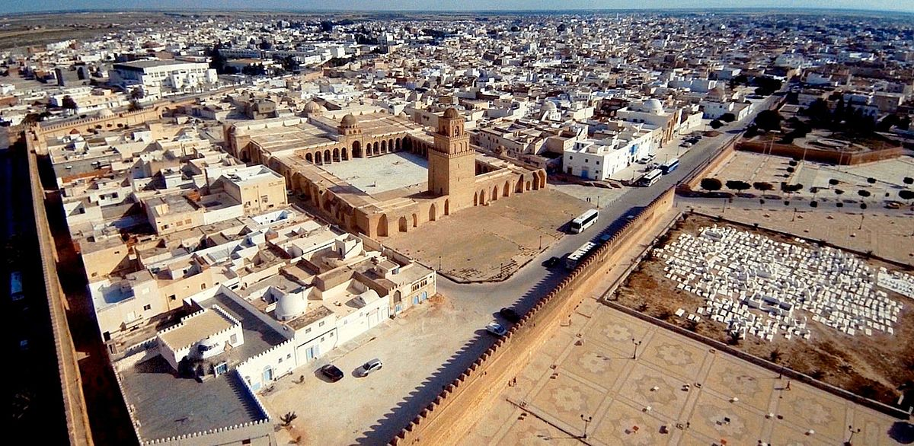
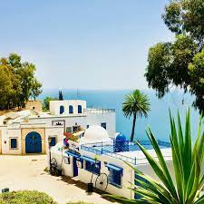
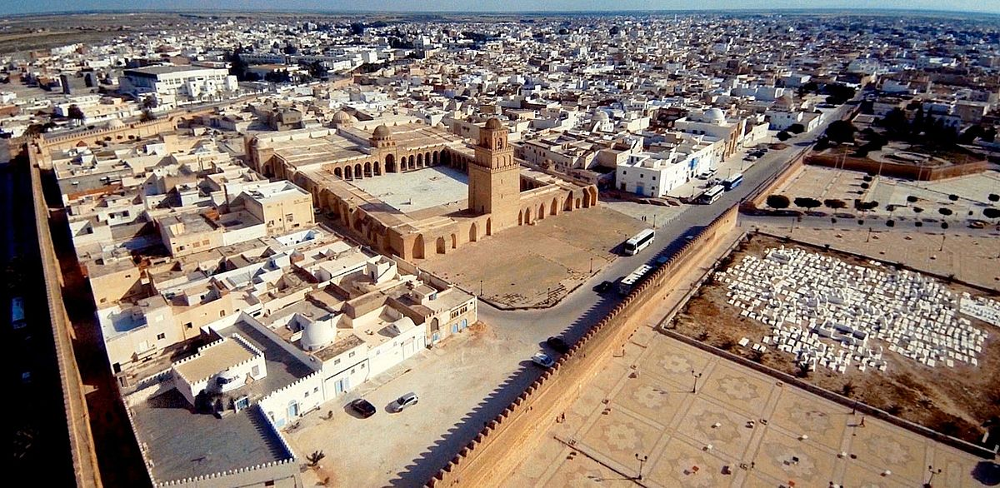
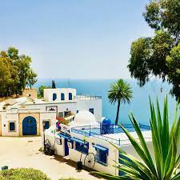

Régions Touristiques

Tunis
Tunis, la capitale, mélange modernité et histoire avec des souks traditionnels et des musées fascinants.

Djerba
L'île de Djerba est connue pour ses plages paradisiaques et son riche patrimoine culturel.

Sahara
Le Sahara tunisien offre des paysages désertiques époustouflants et des aventures inoubliables.
 


